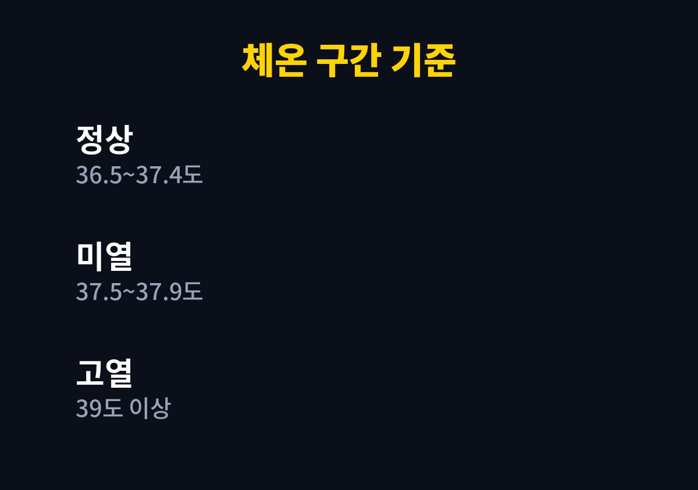
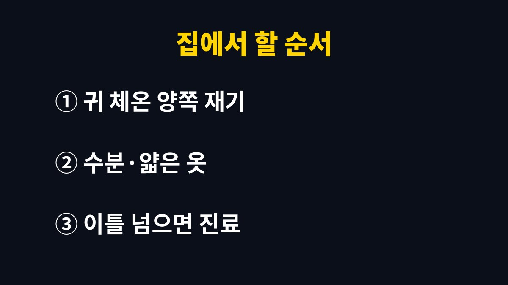

아이 열 날 때 체온 기준은 정상 36.5~37.4도, 미열 37.5~37.9도, 발열 38~38.9도, 고열 39도 이상으로 나뉘고, 구간마다 할 일이 달라진다.
2026년 7월 뉴시스가 의료계 설명으로 보도한 소아 고열 대처법을 2026년 11월에 다시 확인해 옮겼다.
기관명 없이 의료계로만 인용된 기사라서, 해열제 용량처럼 기사에 없는 내용은 쓰지 않았다.
아이는 성인보다 기초 체온이 다소 높고 체온 조절 기능도 덜 발달했다고 한다.
더운 날 오래 놀았거나 식사 직후, 뛰어논 뒤에는 체온이 일시적으로 오를 수 있다.
몸이 뜨겁다고 바로 고열로 보지 않고, 쉬게 한 뒤 다시 잰다.
37.5도와 38도는 불과 0.5도 차이지만 기사 기준으로는 지켜보는 단계와 약을 고려하는 단계로 갈린다.
잰 값이 경계에 걸리면 몇 분 쉬게 한 뒤 한 번 더 재서 적어 둔다.
아이가 잠든 밤에는 깨우지 않고 귓속 체온계로 재는 편이 부담이 덜하다.
| 구분 | 체온 | 기사가 말한 대처 |
|---|---|---|
| 정상 | 36.5~37.4도 | 평소대로 지켜본다 |
| 미열 | 37.5~37.9도 | 얇은 옷, 시원한 실내, 수분 |
| 발열 | 38~38.9도 | 보채거나 처지면 체중에 맞는 해열제 |
| 고열 | 39도 이상 | 해열제와 수분, 아이 반응 확인 |

땀을 가볍게 닦은 뒤 양쪽 귀를 번갈아 잰다.
두 값이 다르면 높게 나온 쪽을 기준으로 삼는 것이 비교적 정확하다고 한다.
평소처럼 반응하는지, 물을 마시는지, 숨쉬기는 괜찮은지를 함께 본다.
39도가 넘어도 잘 놀고 물을 마시는 아이가 있고, 38도 초반인데 축 처지는 아이도 있다.
체온계 숫자 하나로 판단하지 않는 이유다.
측정 시각, 체온, 먹인 약, 마신 물의 양을 휴대폰 메모에 적는다.
진료에서 의사가 가장 먼저 묻는 것이 열이 언제부터 어떻게 올랐는지이기 때문이다.
기사는 열이 이틀 이상 가는지를 병원 기준으로 들었으므로 시작 시각 기록이 판단에 직접 쓰인다.
미열 단계에서 기사가 해열제를 언급하지 않은 점이 눈에 띈다.
이 단계에서는 약보다 옷, 실내 온도, 수분이 먼저라는 뜻으로 읽힌다.

해열제는 아이를 일시적으로 편하게 할 뿐 원인을 치료하지는 않는다.
원인 확인 없이 며칠 해열제만 먹이며 버티면 염증이 이어져 신장이나 폐 같은 장기에 손상을 남길 수 있다는 설명이 기사에 있다.
열이 이틀 이상 이어지거나 해열제를 먹여도 반복해서 오르면 진료를 받는다.
심하게 처지고 호흡곤란, 경련, 탈수 증상이 보이면 가까운 병원으로 간다.
고열의 흔한 원인은 감기, 장염, 구내염, 수족구병이다.
요로감염, 중이염, 세균성 폐렴, 뇌수막염은 빠른 진단이 필요한 원인으로 소개됐다.
이 기사가 의료계 설명을 모은 것이라 체온 구간은 병원마다 조금씩 다르게 말할 수 있다.
주치 소아청소년과가 있다면 우리 아이에게 맞는 기준을 한 번 물어 두면 한밤에 덜 당황한다.
생후 몇 개월 이하처럼 연령별 기준은 이 기사에 없어서, 어린 영아라면 숫자와 상관없이 먼저 병원에 문의한다.
한밤에 열이 올라 아이가 처지고 숨쉬기 힘들어 보이면 날이 밝기를 기다리지 않고 가까운 병원을 찾는다.
체온과 잰 시각을 메모해 가면 진료 때 바로 쓰인다.
참고 자료: 뉴시스 「'한밤 중 불덩이 된 아이'…'소아고열' 대처법은?」(2026년 7월 보도, 2026년 11월 확인)
※ 2026년 기준 공식 기준을 바탕으로 정리한 일반 건강 정보이며, 증상이 계속되거나 지병이 있다면 전문의와 상담하길 바란다.